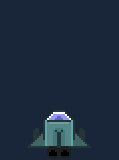

In this part we'll add shooting functionality to our HaxePunk game.
Each fired bullet is a separate Entity, but uses the same graphic. A bullet is spawned every few frames as long as the Space bar is held.
The interval is defined by a numeric value, representing how many frames need to pass before the next bullet is fired. Bullets' spawn points alternate between right and left cannons.
Since our movement logic is handled inside the PlayerShip class, it is logical to handle the shooting mechanics there too. Because the bullets will be created from this class, an access point to the TextureAtlas object is needed.
Let's pass it to the constructor of the PlayerShip class, instead of the previously used graphics object for just the ship itself:
player = new PlayerShip(atlas);Now let's make the necessary changes to the PlayerShip class.
Here's the full code, which I will explain shortly:
package ;
import com.haxepunk.Entity;
import com.haxepunk.graphics.atlas.AtlasRegion;
import com.haxepunk.graphics.atlas.TextureAtlas;
import com.haxepunk.graphics.Image;
import com.haxepunk.HXP;
import com.haxepunk.utils.Input;
import com.haxepunk.utils.Key;
/**
* Player ship.
* @author Kirill Poletaev
*/
class PlayerShip extends Entity
{
private var movespeed:Int;
private var bulletDelay:Int;
private var currentDelay:Int;
private var atlas:TextureAtlas;
private var alternateCannon:Bool;
private var bulletImage:Image;
public function new(atlas:TextureAtlas)
{
super();
graphic = new Image(atlas.getRegion("playerShip"));
movespeed = 8;
width = 64;
height = 48;
x = HXP.width/2 - width/2;
y = HXP.height - 80;
bulletDelay = 5;
currentDelay = 0;
this.atlas = atlas;
alternateCannon = true;
bulletImage = new Image(atlas.getRegion("bullet"));
}
override public function update() {
if (Input.check("down")) {
moveBy(0, movespeed);
}
if (Input.check("up")) {
moveBy(0, -movespeed);
}
if (Input.check("right")) {
moveBy(movespeed, 0);
}
if (Input.check("left")) {
moveBy(-movespeed, 0);
}
if (this.x < 0) this.x = 0;
if (this.y < 0) this.y = 0;
if (this.x > HXP.width - width) this.x = HXP.width - width;
if (this.y > HXP.height - height) this.y = HXP.height - height;
if (Input.check(Key.SPACE)) {
if (currentDelay == 0) {
currentDelay = bulletDelay;
var b:Bullet = new Bullet(bulletImage);
scene.add(b);
if(alternateCannon){
b.x = x;
}else {
b.x = x + 50;
}
alternateCannon = !alternateCannon;
b.y = y;
}
}
if (currentDelay > 0) {
currentDelay--;
}
}
}Since the constructor now receives a TextureAtlas object instead of a single ship graphic, the "graphic" value of this object is devised from the atlas. We can also devise the "bullet" graphic and store it in a variable for future use.
There's a new piece of code in the update() function, which handles the bullet spawning. The currentDelay and bulletDelay variables are used to provide the delay between creating new bullet entities. A bullet is only spawned when the space bar is being held, and when the currentDelay value is 0. As the bullet is spawned, the currentDelay value is set to bulletDelay, which is decreased by 1 with each frame. This ensures that the bullets are not spawned every frame, but in strict intervals.
The alternateCannon value is a boolean, which is toggled after each bullet is spawned. Its value determines the x coordinate of the spawned bullet. This is used to alternate between the left and right ship cannons.
The bullet itself is an instance of a Bullet class, which receives an image to represent itself as the constructor parameter.
Here's the Bullet.hx code:
package ;
import com.haxepunk.Entity;
/**
* Bullet entity.s
* @author Kirill Poletaev
*/
class Bullet extends Entity
{
public function new(g:Dynamic)
{
super();
graphic = g;
}
override public function update() {
this.y -= 12;
if (this.y < -50) {
scene.remove(this);
}
}
}The Bullet entity receives its graphic value from the constructor's parameter, and travels 12 pixels upwards with each frame. When the bullet leaves the screen, it is removed from the scene.
If you test the game now, you can fly and shoot your ship. It will look something like this, but the results may vary based on the bullet speed and delay values:
In the next tutorial, we'll add enemies.